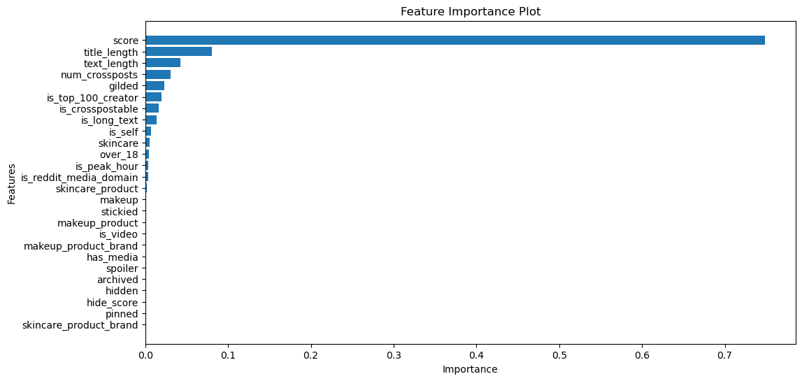

Warning: Ignoring non-Spark config property: fs.s3a.aws.credentials.provider
Ivy Default Cache set to: /root/.ivy2/cache
The jars for the packages stored in: /root/.ivy2/jars
com.johnsnowlabs.nlp#spark-nlp_2.12 added as a dependency
org.apache.hadoop#hadoop-aws added as a dependency
:: resolving dependencies :: org.apache.spark#spark-submit-parent-cf4b7f5b-83ea-4360-ac1e-4cd9940c7856;1.0
confs: [default]
found com.johnsnowlabs.nlp#spark-nlp_2.12;5.1.3 in central
found com.typesafe#config;1.4.2 in central
found org.rocksdb#rocksdbjni;6.29.5 in central
found com.amazonaws#aws-java-sdk-bundle;1.11.828 in central
found com.github.universal-automata#liblevenshtein;3.0.0 in central
found com.google.protobuf#protobuf-java-util;3.0.0-beta-3 in central
found com.google.protobuf#protobuf-java;3.0.0-beta-3 in central
found com.google.code.gson#gson;2.3 in central
found it.unimi.dsi#fastutil;7.0.12 in central
found org.projectlombok#lombok;1.16.8 in central
found com.google.cloud#google-cloud-storage;2.20.1 in central
found com.google.guava#guava;31.1-jre in central
found com.google.guava#failureaccess;1.0.1 in central
found com.google.guava#listenablefuture;9999.0-empty-to-avoid-conflict-with-guava in central
found com.google.errorprone#error_prone_annotations;2.18.0 in central
found com.google.j2objc#j2objc-annotations;1.3 in central
found com.google.http-client#google-http-client;1.43.0 in central
found io.opencensus#opencensus-contrib-http-util;0.31.1 in central
found com.google.http-client#google-http-client-jackson2;1.43.0 in central
found com.google.http-client#google-http-client-gson;1.43.0 in central
found com.google.api-client#google-api-client;2.2.0 in central
found commons-codec#commons-codec;1.15 in central
found com.google.oauth-client#google-oauth-client;1.34.1 in central
found com.google.http-client#google-http-client-apache-v2;1.43.0 in central
found com.google.apis#google-api-services-storage;v1-rev20220705-2.0.0 in central
found com.google.code.gson#gson;2.10.1 in central
found com.google.cloud#google-cloud-core;2.12.0 in central
found io.grpc#grpc-context;1.53.0 in central
found com.google.auto.value#auto-value-annotations;1.10.1 in central
found com.google.auto.value#auto-value;1.10.1 in central
found javax.annotation#javax.annotation-api;1.3.2 in central
found commons-logging#commons-logging;1.2 in central
found com.google.cloud#google-cloud-core-http;2.12.0 in central
found com.google.http-client#google-http-client-appengine;1.43.0 in central
found com.google.api#gax-httpjson;0.108.2 in central
found com.google.cloud#google-cloud-core-grpc;2.12.0 in central
found io.grpc#grpc-alts;1.53.0 in central
found io.grpc#grpc-grpclb;1.53.0 in central
found org.conscrypt#conscrypt-openjdk-uber;2.5.2 in central
found io.grpc#grpc-auth;1.53.0 in central
found io.grpc#grpc-protobuf;1.53.0 in central
found io.grpc#grpc-protobuf-lite;1.53.0 in central
found io.grpc#grpc-core;1.53.0 in central
found com.google.api#gax;2.23.2 in central
found com.google.api#gax-grpc;2.23.2 in central
found com.google.auth#google-auth-library-credentials;1.16.0 in central
found com.google.auth#google-auth-library-oauth2-http;1.16.0 in central
found com.google.api#api-common;2.6.2 in central
found io.opencensus#opencensus-api;0.31.1 in central
found com.google.api.grpc#proto-google-iam-v1;1.9.2 in central
found com.google.protobuf#protobuf-java;3.21.12 in central
found com.google.protobuf#protobuf-java-util;3.21.12 in central
found com.google.api.grpc#proto-google-common-protos;2.14.2 in central
found org.threeten#threetenbp;1.6.5 in central
found com.google.api.grpc#proto-google-cloud-storage-v2;2.20.1-alpha in central
found com.google.api.grpc#grpc-google-cloud-storage-v2;2.20.1-alpha in central
found com.google.api.grpc#gapic-google-cloud-storage-v2;2.20.1-alpha in central
found com.fasterxml.jackson.core#jackson-core;2.14.2 in central
found com.google.code.findbugs#jsr305;3.0.2 in central
found io.grpc#grpc-api;1.53.0 in central
found io.grpc#grpc-stub;1.53.0 in central
found org.checkerframework#checker-qual;3.31.0 in central
found io.perfmark#perfmark-api;0.26.0 in central
found com.google.android#annotations;4.1.1.4 in central
found org.codehaus.mojo#animal-sniffer-annotations;1.22 in central
found io.opencensus#opencensus-proto;0.2.0 in central
found io.grpc#grpc-services;1.53.0 in central
found com.google.re2j#re2j;1.6 in central
found io.grpc#grpc-netty-shaded;1.53.0 in central
found io.grpc#grpc-googleapis;1.53.0 in central
found io.grpc#grpc-xds;1.53.0 in central
found com.navigamez#greex;1.0 in central
found dk.brics.automaton#automaton;1.11-8 in central
found com.johnsnowlabs.nlp#tensorflow-cpu_2.12;0.4.4 in central
found com.microsoft.onnxruntime#onnxruntime;1.15.0 in central
found org.apache.hadoop#hadoop-aws;3.2.2 in central
:: resolution report :: resolve 6250ms :: artifacts dl 584ms
:: modules in use:
com.amazonaws#aws-java-sdk-bundle;1.11.828 from central in [default]
com.fasterxml.jackson.core#jackson-core;2.14.2 from central in [default]
com.github.universal-automata#liblevenshtein;3.0.0 from central in [default]
com.google.android#annotations;4.1.1.4 from central in [default]
com.google.api#api-common;2.6.2 from central in [default]
com.google.api#gax;2.23.2 from central in [default]
com.google.api#gax-grpc;2.23.2 from central in [default]
com.google.api#gax-httpjson;0.108.2 from central in [default]
com.google.api-client#google-api-client;2.2.0 from central in [default]
com.google.api.grpc#gapic-google-cloud-storage-v2;2.20.1-alpha from central in [default]
com.google.api.grpc#grpc-google-cloud-storage-v2;2.20.1-alpha from central in [default]
com.google.api.grpc#proto-google-cloud-storage-v2;2.20.1-alpha from central in [default]
com.google.api.grpc#proto-google-common-protos;2.14.2 from central in [default]
com.google.api.grpc#proto-google-iam-v1;1.9.2 from central in [default]
com.google.apis#google-api-services-storage;v1-rev20220705-2.0.0 from central in [default]
com.google.auth#google-auth-library-credentials;1.16.0 from central in [default]
com.google.auth#google-auth-library-oauth2-http;1.16.0 from central in [default]
com.google.auto.value#auto-value;1.10.1 from central in [default]
com.google.auto.value#auto-value-annotations;1.10.1 from central in [default]
com.google.cloud#google-cloud-core;2.12.0 from central in [default]
com.google.cloud#google-cloud-core-grpc;2.12.0 from central in [default]
com.google.cloud#google-cloud-core-http;2.12.0 from central in [default]
com.google.cloud#google-cloud-storage;2.20.1 from central in [default]
com.google.code.findbugs#jsr305;3.0.2 from central in [default]
com.google.code.gson#gson;2.10.1 from central in [default]
com.google.errorprone#error_prone_annotations;2.18.0 from central in [default]
com.google.guava#failureaccess;1.0.1 from central in [default]
com.google.guava#guava;31.1-jre from central in [default]
com.google.guava#listenablefuture;9999.0-empty-to-avoid-conflict-with-guava from central in [default]
com.google.http-client#google-http-client;1.43.0 from central in [default]
com.google.http-client#google-http-client-apache-v2;1.43.0 from central in [default]
com.google.http-client#google-http-client-appengine;1.43.0 from central in [default]
com.google.http-client#google-http-client-gson;1.43.0 from central in [default]
com.google.http-client#google-http-client-jackson2;1.43.0 from central in [default]
com.google.j2objc#j2objc-annotations;1.3 from central in [default]
com.google.oauth-client#google-oauth-client;1.34.1 from central in [default]
com.google.protobuf#protobuf-java;3.21.12 from central in [default]
com.google.protobuf#protobuf-java-util;3.21.12 from central in [default]
com.google.re2j#re2j;1.6 from central in [default]
com.johnsnowlabs.nlp#spark-nlp_2.12;5.1.3 from central in [default]
com.johnsnowlabs.nlp#tensorflow-cpu_2.12;0.4.4 from central in [default]
com.microsoft.onnxruntime#onnxruntime;1.15.0 from central in [default]
com.navigamez#greex;1.0 from central in [default]
com.typesafe#config;1.4.2 from central in [default]
commons-codec#commons-codec;1.15 from central in [default]
commons-logging#commons-logging;1.2 from central in [default]
dk.brics.automaton#automaton;1.11-8 from central in [default]
io.grpc#grpc-alts;1.53.0 from central in [default]
io.grpc#grpc-api;1.53.0 from central in [default]
io.grpc#grpc-auth;1.53.0 from central in [default]
io.grpc#grpc-context;1.53.0 from central in [default]
io.grpc#grpc-core;1.53.0 from central in [default]
io.grpc#grpc-googleapis;1.53.0 from central in [default]
io.grpc#grpc-grpclb;1.53.0 from central in [default]
io.grpc#grpc-netty-shaded;1.53.0 from central in [default]
io.grpc#grpc-protobuf;1.53.0 from central in [default]
io.grpc#grpc-protobuf-lite;1.53.0 from central in [default]
io.grpc#grpc-services;1.53.0 from central in [default]
io.grpc#grpc-stub;1.53.0 from central in [default]
io.grpc#grpc-xds;1.53.0 from central in [default]
io.opencensus#opencensus-api;0.31.1 from central in [default]
io.opencensus#opencensus-contrib-http-util;0.31.1 from central in [default]
io.opencensus#opencensus-proto;0.2.0 from central in [default]
io.perfmark#perfmark-api;0.26.0 from central in [default]
it.unimi.dsi#fastutil;7.0.12 from central in [default]
javax.annotation#javax.annotation-api;1.3.2 from central in [default]
org.apache.hadoop#hadoop-aws;3.2.2 from central in [default]
org.checkerframework#checker-qual;3.31.0 from central in [default]
org.codehaus.mojo#animal-sniffer-annotations;1.22 from central in [default]
org.conscrypt#conscrypt-openjdk-uber;2.5.2 from central in [default]
org.projectlombok#lombok;1.16.8 from central in [default]
org.rocksdb#rocksdbjni;6.29.5 from central in [default]
org.threeten#threetenbp;1.6.5 from central in [default]
:: evicted modules:
com.google.protobuf#protobuf-java-util;3.0.0-beta-3 by [com.google.protobuf#protobuf-java-util;3.21.12] in [default]
com.google.protobuf#protobuf-java;3.0.0-beta-3 by [com.google.protobuf#protobuf-java;3.21.12] in [default]
com.google.code.gson#gson;2.3 by [com.google.code.gson#gson;2.10.1] in [default]
com.amazonaws#aws-java-sdk-bundle;1.11.563 by [com.amazonaws#aws-java-sdk-bundle;1.11.828] in [default]
---------------------------------------------------------------------
| | modules || artifacts |
| conf | number| search|dwnlded|evicted|| number|dwnlded|
---------------------------------------------------------------------
| default | 77 | 0 | 0 | 4 || 73 | 0 |
---------------------------------------------------------------------
:: retrieving :: org.apache.spark#spark-submit-parent-cf4b7f5b-83ea-4360-ac1e-4cd9940c7856
confs: [default]
0 artifacts copied, 73 already retrieved (0kB/181ms)
23/12/06 20:36:48 WARN NativeCodeLoader: Unable to load native-hadoop library for your platform... using builtin-java classes where applicable
Setting default log level to "WARN".
To adjust logging level use sc.setLogLevel(newLevel). For SparkR, use setLogLevel(newLevel).
%%timeimport sagemakersession = sagemaker.Session()bucket = session.default_bucket()output_prefix_data_submissions =f"project/submissions/yyyy=*"s3_path =f"s3a://{bucket}/{output_prefix_data_submissions}"print(f"reading submissions from {s3_path}")submissions = spark.read.parquet(s3_path, header=True)print(f"shape of the submissions dataframe is {submissions.count():,}x{len(submissions.columns)}")
sagemaker.config INFO - Not applying SDK defaults from location: /etc/xdg/sagemaker/config.yaml
sagemaker.config INFO - Not applying SDK defaults from location: /root/.config/sagemaker/config.yaml
sagemaker.config INFO - Not applying SDK defaults from location: /etc/xdg/sagemaker/config.yaml
sagemaker.config INFO - Not applying SDK defaults from location: /root/.config/sagemaker/config.yaml
reading submissions from s3a://sagemaker-us-east-1-834346005548/project/submissions/yyyy=*
shape of the submissions dataframe is 95,932x68
CPU times: user 3.45 s, sys: 252 ms, total: 3.7 s
Wall time: 6min 34s
23/12/06 20:37:15 WARN MetricsConfig: Cannot locate configuration: tried hadoop-metrics2-s3a-file-system.properties,hadoop-metrics2.properties
23/12/06 20:37:27 WARN package: Truncated the string representation of a plan since it was too large. This behavior can be adjusted by setting 'spark.sql.debug.maxToStringFields'.
[Stage 1:========================================================>(96 + 1) / 97]
# List of columns to select as independent variablesindependent_vars = ["is_top_100_creator", "text_length", "title_length", "archived", "is_peak_hour", "gilded", "hidden", "hide_score", "is_crosspostable","is_reddit_media_domain", "is_self", "is_video", "num_crossposts", "over_18", "has_media", "pinned", "score","spoiler", "stickied", "is_long_text", "skincare","skincare_product", "skincare_product_brand", "makeup", "makeup_product","makeup_product_brand","num_comments"]# Selecting the independent variables from the DataFrameselected_df = submissions_var.select(independent_vars)
from pyspark.ml.feature import VectorAssemblerfrom pyspark.ml.regression import GBTRegressorfrom pyspark.ml.evaluation import RegressionEvaluator
feature_columns = [col for col in selected_df.columns if col notin ['num_comments']]# Assemble features into a single vector columnassembler = VectorAssembler(inputCols=feature_columns, outputCol="features")
# Split the data into training and test setstrain_data, test_data = selected_df.randomSplit([0.8, 0.2], seed=123)
feature_columns = [col for col in selected_df.columns if col notin ['num_comments']]# Assemble features into a single vector columnassembler = VectorAssembler(inputCols=feature_columns, outputCol="features")# Define a Gradient Boosted Tree Regressor modelgbt = GBTRegressor(featuresCol="features", labelCol="num_comments", seed=123)# Create a Pipelinepipeline = Pipeline(stages=[assembler, gbt])# Train the modelmodel = pipeline.fit(train_data)
# Make predictions on the test datapredictions = model.transform(test_data)
WARNING: An illegal reflective access operation has occurred
WARNING: Illegal reflective access by org.apache.spark.util.SizeEstimator$ (file:/opt/conda/lib/python3.10/site-packages/pyspark/jars/spark-core_2.12-3.4.0.jar) to field java.nio.charset.Charset.name
WARNING: Please consider reporting this to the maintainers of org.apache.spark.util.SizeEstimator$
WARNING: Use --illegal-access=warn to enable warnings of further illegal reflective access operations
WARNING: All illegal access operations will be denied in a future release
# Evaluate the model using RMSErmse_evaluator = RegressionEvaluator(labelCol="num_comments", predictionCol="prediction", metricName="rmse")gbt_rmse = rmse_evaluator.evaluate(predictions)print(f"RMSE: {gbt_rmse}")# Evaluate the model using R2r2_evaluator = RegressionEvaluator(labelCol="num_comments", predictionCol="prediction", metricName="r2")gbt_r2 = r2_evaluator.evaluate(predictions)print(f"R2: {gbt_r2}")# Evaluate the model using MAEmae_evaluator = RegressionEvaluator(labelCol="num_comments", predictionCol="prediction", metricName="mae")gbt_mae = mae_evaluator.evaluate(predictions)print(f"MAE: {gbt_mae}")
Elastic Net Regression - RMSE: 98.17368304307564, R2: 0.29272857488884796, MAE: 8.447160226085387
import pandas as pdimport plotly.graph_objects as gometrics_data = {"Model": ["Generalized Linear Regression", "Elastic Net Regression","Random Forest", "Gradient Boosted Tree Regressor","Linear Regression"],"RMSE": [glr_rmse, en_rmse,rf_rmse, gbt_rmse,lr_rmse],"R2": [glr_r2,en_r2,rf_r2, gbt_r2,lr_r2],"MAE": [glr_mae, en_mae,rf_mae, gbt_mae,lr_mae]}# Convert the metrics data into a Pandas DataFramemetrics_df = pd.DataFrame(metrics_data)
# Create a Plotly tablefig = go.Figure(data=[go.Table( header=dict(values=list(metrics_df.columns), fill_color='paleturquoise', align='left'), cells=dict(values=[metrics_df.Model, metrics_df.RMSE, metrics_df.R2, metrics_df.MAE], fill=dict(color=['lavender', # Cells color for Model column ['yellow'if val ==min(metrics_df.RMSE) else'lavender'for val in metrics_df.RMSE], ['yellow'if val ==max(metrics_df.R2) else'lavender'for val in metrics_df.R2], ['yellow'if val ==min(metrics_df.MAE) else'lavender'for val in metrics_df.MAE]]), align='left'))])fig.update_layout(title_text='Model Evaluation Metrics')# Show the figurefig.show()
fig.write_html("num_comments_model_metrics.html")
From a technical standpoint, the Random Forest model exhibits outstanding performance in our model evaluation, achieving the lowest RMSE of approximately 36.38, the highest R2 value of roughly 0.397, and a low MAE near 7.12. This model demonstrates a strong capacity to capture the underlying variability within the data, suggesting a robust fit capable of delineating the complex, non-linear patterns often present in social media user interactions. In comparison, the Gradient Boosted Tree Regressor, while also effective, does not quite match the Random Forest in terms of the R2 metric. The Generalized Linear and Linear Regression models post identical RMSE and R2 values, indicating a potentially oversimplified approach to modeling the intricate data landscape. Elastic Net Regression, with a slight improvement in R2, still falls short of the tree-based methodologies.
From a business perspective, the superior results of the Random Forest model highlight its reliability for predicting user engagement within the “MakeupAddiction” subreddit. Its high degree of accuracy offers moderators and marketers actionable insights for anticipating engagement patterns, gearing up for trending discussions, and developing resonant content. Although the Gradient Boosted Tree also shows promise, the Random Forest’s nuanced modeling makes it particularly valuable for informing strategic decisions. Conversely, the limited performance of the linear models may not adequately cater to the nuanced and dynamic nature of online social interactions, which could lead to less effective engagement strategies. Harnessing the Random Forest insights could lead to more compelling content creation, strategic planning for user interaction, and overall heightened community activity.
import matplotlib.pyplot as plt# Extract the RandomForestRegressor model from the pipelinerf_stage = rf_model.stages[-1] # The last stage is the RandomForestRegressor# Extract feature importances from the RandomForestRegressor modelfeature_importances = rf_stage.featureImportances.toArray()# Get feature names from the VectorAssembler# which is the VectorAssembler used in the pipelinefeature_names = assembler.getInputCols()# Match feature names with their importance scoresfeature_importance_dict =dict(zip(feature_names, feature_importances))# Sort features by importancesorted_features =sorted(feature_importance_dict.items(), key=lambda x: x[1], reverse=True)# Prepare data for plottingsorted_feature_names = [x[0] for x in sorted_features]sorted_importances = [x[1] for x in sorted_features]# Plotplt.figure(figsize=(12, 6))plt.barh(sorted_feature_names, sorted_importances)plt.xlabel('Importance')plt.ylabel('Features')plt.title('Feature Importance Plot')plt.gca().invert_yaxis() # Invert y-axis to have the most important feature on topplt.show()

# Convert the dictionary to a DataFramefeature_importances_df = pd.DataFrame(list(feature_importance_dict.items()), columns=['Feature', 'Importance'])feature_importances_df.sort_values('Importance', ascending=True, inplace=True)top_15_features_df = feature_importances_df.sort_values('Importance', ascending=False).head(15)# Create a Plotly bar chart for the top 15 featuresfig = px.bar( top_15_features_df, x='Importance', y='Feature', orientation='h', title='Top 15 Feature Importance Plot')# Reverse the y-axis to show the most important feature at the topfig.update_layout(yaxis={'categoryorder':'total ascending'})# Adjust the layout to fit the feature names and enhance readabilityfig.update_layout( margin=dict(l=160), # Increase left margin to fit longer feature names height=600, # Adjust height to fit top 15 features width=900# Optionally adjust width to your preference)# Show the plotfig.show()
Fig 3 illustrates the key drivers of user engagement on the “MakeupAddiction” subreddit, informed by a Random Forest machine learning model’s feature importance analysis. The ‘score’ emerges as the most influential factor, underscoring the importance of content that resonates with the community in fostering discussion. The length of the title also proves to be significant, highlighting the impact of a concise and engaging title in capturing user attention.
The model points to crossposting, the presence of a ‘top creator’, and text length as significant predictors of engagement, suggesting that visibility across communities, creator reputation, and detailed content are valued by the subreddit’s users. Timing (indicated by ‘is_peak_hour’) and content hosting (suggested by ‘is_reddit_media_domain’) are also important, emphasizing when and where content is posted as factors in maximizing user interaction. Moreover, the interest in skincare topics suggests a broader community engagement beyond makeup alone, while preferences for posts with media and narrative (‘is_self’ and ‘is_long_text’) indicate a fondness for visually appealing and story-rich content.
From a business intuition perspective, this plot reveals the intricate dynamics of user engagement within the “MakeupAddiction” subreddit, showcasing the most influential factors that lead to a submission garnering comments. From it, we can glean actionable suggestions for crafting content that not only captivates the audience but also encourages vibrant discussions.
Quality is the cornerstone of any successful submission. The ‘score’ of a post, as seen leading our list, is a tangible measure of the community’s response, acting as a direct indicator of the content’s resonance with the audience. Achieving a high score entails crafting posts that are both visually and informatively engaging—high-resolution images, thorough tutorials, and authentic reviews are the kind of content that often sees a positive reception.
The art of titling is your gateway to capturing immediate interest. A title that succinctly yet vividly encapsulates the essence of your content can make the difference between a fleeting glance and a deep dive into your post. It’s the spark that ignites curiosity and engagement, making it a crucial element in the anatomy of a popular submission.
Crossposting strategically serves to broaden the reach of your content, inviting new perspectives and discussions from various corners of the Reddit world. It’s a nod to the interconnectedness of communities and interests, which can be a powerful tool in amplifying the voice of your submission. Moreover, becoming a familiar figure in the subreddit through regular, quality contributions can elevate your content’s visibility and the engagement it receives—our plot suggests that being recognized as a top creator has its perks.
The plot also underscores the importance of content depth. A lengthy, well-articulated post can spark extensive discussions, inviting users to engage with the content and each other. This depth can be achieved through storytelling, comprehensive guides, or detailed personal experiences, which often encourage users to contribute their insights and extend the conversation.
Understanding the subreddit’s rhythms and posting during peak hours can significantly increase the chances of your content being seen and engaged with. It’s about being present in the community’s space when they are most active and eager for new content. And when it comes to hosting media, remember that content hosted directly on Reddit’s media domain can offer a smoother user experience, leading to better engagement.
Expanding the content’s focus to include discussions about skincare, in addition to makeup, can also invite a broader spectrum of comments. It’s a recognition of the holistic approach the community often takes towards beauty routines. And while visual content is key in a makeup-centric space, do not underestimate the power of a good story. Narrative-driven ‘self’ posts can resonate deeply with readers, prompting them to engage in a more personal and meaningful way.
By weaving together these insights—focusing on content quality, mastering the craft of titling, leveraging cross-community interest through strategic crossposting, engaging consistently as a creator, enriching the narrative depth of your posts, timing your content right, and using the platform’s media hosting effectively—you can create posts that are not just seen but talked about. This plot serves as a roadmap to navigating the “MakeupAddiction” subreddit, helping you to foster a submission that has the potential to spark a lively and lasting dialogue.
from pyspark.ml import PipelineModelmodel_path ="num_comments_rf_model"# Save the modelrf_model.write().overwrite().save(model_path)
from pyspark.ml import PipelineModel# Path where the model is savedmodel_path ="num_comments_rf_model"# Use the same path as before# Load the saved modelloaded_rf_model = PipelineModel.load(model_path)# Make predictions using the loaded modelloaded_rf_predictions = loaded_rf_model.transform(test_data)# Evaluate the predictionsrmse_evaluator = RegressionEvaluator(labelCol="num_comments", predictionCol="prediction", metricName="rmse")r2_evaluator = RegressionEvaluator(labelCol="num_comments", predictionCol="prediction", metricName="r2")mae_evaluator = RegressionEvaluator(labelCol="num_comments", predictionCol="prediction", metricName="mae")# Calculate evaluation metricsloaded_rf_rmse = rmse_evaluator.evaluate(loaded_rf_predictions)loaded_rf_r2 = r2_evaluator.evaluate(loaded_rf_predictions)loaded_rf_mae = mae_evaluator.evaluate(loaded_rf_predictions)# Print the evaluation metricsprint(f"Loaded Random Forest Model - RMSE: {loaded_rf_rmse}, R2: {loaded_rf_r2}, MAE: {loaded_rf_mae}")